指针是什么
在计算机科学中，指针（Pointer）是编程语言中的一个对象，利用地址，它的值直接指向
（points to）存在电脑存储器中另一个地方的值。由于通过地址能找到所需的变量单元，可以
说，地址指向该变量单元。因此，将地址形象化的称为“指针”。意思是通过它能找到以它为地址
的内存单元。
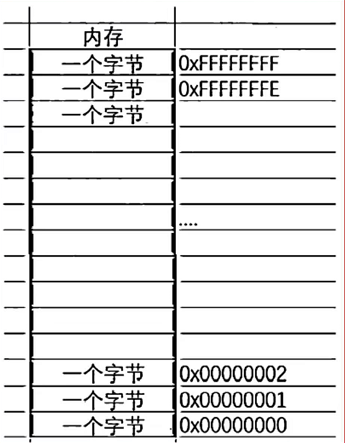
int a = 10;//在内存中开辟一块空间
int *p = &a;//这里我们对变量a，取出它的地址，可以使用&操作符。
//将a的地址存放在p变量中，p就是一个之指针变量
总结：指针就是变量，用来存放地址的变量。（存放在指针中的值都被当成地址处理）。指针就是地址.
- 一个小的单元到底是多大？（1个字节）
如何编址？
经过仔细的计算和权衡我们发现一个字节给一个对应的地址是比较合适的。 对于32位的机器，假设有32根地址线，那么假设每根地址线在寻址的是产生一个电信号正电/负电（1或者0）
那么32根地址线产生的地址就会是：
00000000 00000000 00000000 00000000 00000000 00000000 00000000 00000001 ... 11111111 11111111 11111111 11111111这里就有2的32次方个地址。
每个地址标识一个字节，那我们就可以给 （2^32Byte == 2^32/1024KB ==2^32/1024/1024MB==2^32/1024/1024/1024GB == 4GB） 4G的空闲进行编址。
同样的方法，那64位机器，如果给64根地址线，那能编址多大空间，自己计算。
总结：
- 指针是用来存放地址的，地址是唯一标示一块地址空间的。
- 指针的大小在32位平台是4个字节，在64位平台是8个字节。
指针和指针类型
指针+-整数
int n = 10;
char *pc = (char *)&n;
int *pi = &n;
printf("%p\n", &n); //000000000061FE0C
printf("%p\n", pc); //000000000061FE0C
printf("%p\n", pc + 1); //000000000061FE0D
printf("%p\n", pi); //000000000061FE0C
printf("%p\n", pi + 1); //000000000061FE10
总结：指针的类型决定了指针向前或者向后走一步有多大（距离单位是字节）(指针的步长)。
int* p; p+1 -->4
char* p; p+1 -->1
double* p; p+1 -->8
指针的解引用
int a = 0x11223344;
int* pa = &a;
*pa = 0;
/*char *pc = &a;
*pc = 0;*/
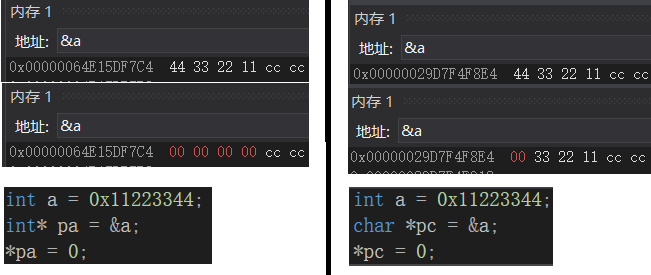
总结： 指针的类型决定了，对指针解引用的时候有多大的权限（能操作几个字节）。
int* p; *p 能够访问4个字节
char* p; *p 能够访问1个字节
double* p; *p 能够访问8个字节
示例:指针类型的意义
int arr[10] = { 0 };
int* p = arr;//数组名-首元素的地址
//char*p = arr;
int i = 0;
for (i = 0; i < 10; i++)
{
*(p + i) = 1;
}
int* p = arr;
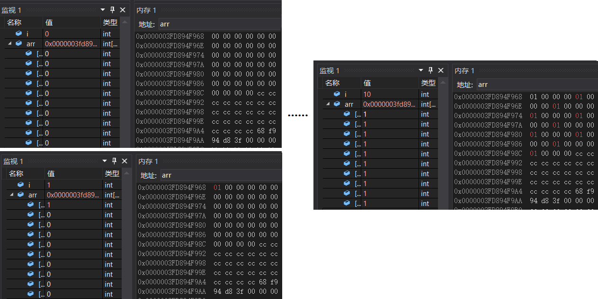
char*p = arr;
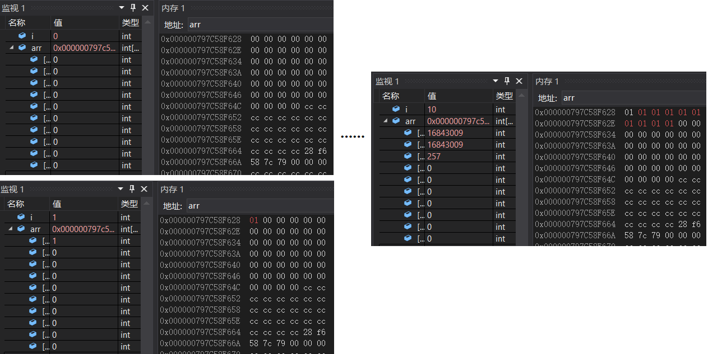
野指针
概念： 野指针就是指针指向的位置是不可知的（随机的、不正确的、没有明确限制的）
野指针成因
指针未初始化
//int a;//局部变量不初始化，默认是随机值 int *p;//局部的指针变量，就被初始化随机值 *p = 20;指针越界访问
int a[10] = { 0 }; int i = 0; int* p = a; for (i = 0; i <= 12; i++) { //*p = i; //p++; *p++ = i; }指针指向的空间释放（详见动态内存开辟）
int* test() { int a = 10; //局部变量 return &a; } int main() { int *p = test();//test指向的空间被释放了 *p = 20; //访问就是非法的 return 0; }
如何避免野指针
指针初始化
int b = 0;// int a = 10; int*pa = &a;//初始化 int* p = NULL;//NULL- 用来初始化指针的，给指针赋值小心指针越界
指针指向空间释放即使置NULL
int a = 10; int *pa = &a; *pa = 20; // pa = NULL;指针使用之前检查有效性
if (pa != NULL) { }
指针运算
指针+- 整数
int arr[10] = { 1,2,3,4,5,6,7,8,9,10 };
int i = 0;
int sz = sizeof(arr) / sizeof(arr[0]);
int* p = arr;
for (i = 0; i < sz; i++)
{
printf("%d ", *p); // 1 2 3 4 5 6 7 8 9 10
p++;//p+=1
}
printf("\n");
int* p1 = &arr[9];
for (i = 0; i < 5; i++)
{
printf("%d ", *p1); //10 8 6 4 2
p1-=2;
}
指针-指针
char ch[5] = {0};
int arr[10] = { 1, 2, 3, 4, 5, 6, 7, 8, 9, 15 };
printf("%d\n", &arr[9] - &arr[0]);//9,指针之间元素的个数
printf("%d\n", &arr[0] - &arr[9]);//|-9|,指针之间元素的个数
//printf("%d\n", &arr[9] - &ch[0]);//err
计算字符串长度[1.计数器的方式1; 2.递归的方式2 3.指针的方式3]
int my_strlen(char* str)
{
char* start = str;
char* end = str;
while (*end != '\0')
{
end++;
}
return end - start;//
}
指针的关系运算
#define N_VALUES 5
float values[N_VALUES];
float *vp;
//指针+-整数；指针的关系运算
for (vp = &values[0]; vp < &values[N_VALUES])
{
*vp++ = 0;
}
//下面代码是应该避免这样写，因为标准并不保证它可行。
for(vp = &values[N_VALUES-1]; vp >= &values[0];vp--)
{
*vp = 0;
}
标准规定：
允许指向数组元素的指针与指向数组最后一个元素后面的那个内存位置的指针比较，但是不允许与指向第一个元素之前的那个内存位置的指针进行比较。
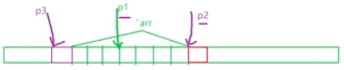
指针和数组
int arr[10] = { 0 };
printf("%p\n", arr);//地址-首元素的地址
printf("%p\n", arr+1);
printf("%p\n", &arr[0]);//首元素地址
printf("%p\n", &arr[0]+1);
printf("%p\n", &arr);//不是首元素地址，是整个数组地址
printf("%p\n", &arr + 1);
//1. &arr- &数组名- 数组名不是首元素的地址-数组名表示整个数组 - &数组名 取出的是整个数组的地址
//2. sizeof(arr) - sizeof(数组名) - 数组名表示的整个数组- sizeof(数组名)计算的是整个数组的大小
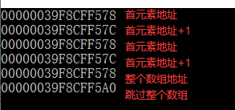
结论：数组名表示的是数组首元素的地址。
int arr[10] = { 0 };
int* p = arr;
int i = 0;
for (i = 0; i < 10; i++)
{
*(p + i) = i;
}
for (i = 0; i < 10; i++)
{
printf("%d ", *(p + i)); //0 1 2 3 4 5 6 7 8 9
}
printf("\n\n");
for (i = 0; i < 10; i++)
{
printf("&arr[%d] = %p <====> p+%d = %p\n", i, &arr[i], i, p + i);
}
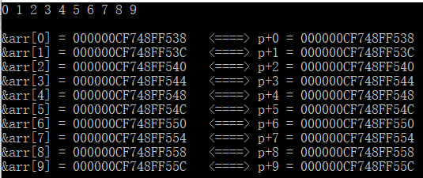
二级指针
int a = 10;
int * pa = &a;// *表示pa是指针，int表示pa指向的对象类型是int
int* * ppa = &pa;//ppa就是二级指针,存放一级指针变量的地址
//int* 表示ppa指向的对象类型是int* ，第二个*表示ppa是个指针
**ppa = 20;
printf("%d\n", **ppa);//20
printf("%d\n", a);//20
//int** * pppa = &ppa;// 三级指针
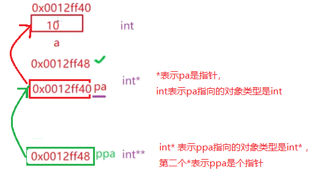
指针数组
指针数组是指针还是数组？
答案：是数组，是存放指针的数组。
int a = 10;
int b = 20;
int c = 30;
//int* pa = &a;
//int* pb = &b;
//int* pc = &c;
//整形数组 - 存放整形
//字符数组 - 存放字符
//指针数组 - 存放指针
//int arr[10];
int* arr2[3] = {&a, &b, &c};//整形指针数组
int i = 0;
for (i = 0; i < 3; i++)
{
printf("%d ", *(arr2[i])); //10 20 30
}
练习
题目1
int arr[] = { 1, 2, 3, 4, 5 };
short *p = (short*)arr;
int i = 0;
for (i = 0; i<4; i++)
{
*(p + i) = 0;
}
for (i = 0; i<5; i++)
{
printf("%d ", arr[i]);//0 0 3 4 5
}
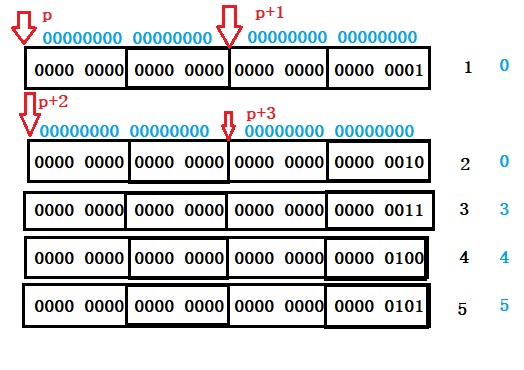
题目2
int a = 0x11223344;
char *pc = (char*)&a;
*pc = 0;
printf("%x\n", a);
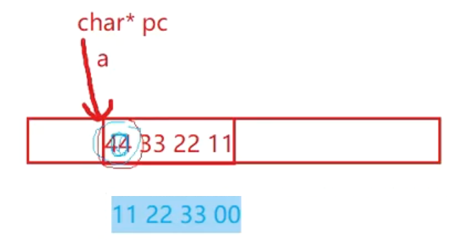
使用指针打印数组内容
#include <stdio.h>
void print(int *p, int sz)
{
int i = 0;
for (i = 0; i < sz; i++)
{
printf("%d ", *(p + i));
}
}
int main()
{
int arr[] = { 1, 2, 3, 4, 5, 6, 7, 8, 9 };
int sz = sizeof(arr) / sizeof(arr[0]);
print(arr, sz);
return 0;
}
注：
- 指针-指针得到指针之间元素的个数，非字节数
写一个函数逆序字符串的内容
#include <stdio.h>
#include <string.h>
#include <assert.h>
void reverse(char *str)
{
assert(str); //判断指针的有效性
int len = strlen(str);
char *left = str;
char *right = str + len - 1;
while (left < right)
{
char tmp = *left;
*left = *right;
*right = tmp;
left++;
right--;
}
}
int main()
{
char arr[256] = {0};
//scanf("%s", arr);//abcdef ---> fedcba scanf读取遇到空格就会结束
gets(arr); //读取一行
//逆序函数
reverse(arr);
printf("逆序后的字符串：%s\n", arr); //
return 0;
}
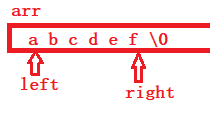
计算求和 Sn=a+aa+aaa+aaaa+aaaaa的前5项之和，其中a是一个数字。
int a = 0;
int n = 0;
scanf("%d%d", &a, &n);//2 5
int sum = 0;
int i = 0;
int ret = 0;
//2 22 222 2222 22222
//
for (i = 0; i < n; i++)
{
ret = ret * 10 + a;
sum += ret;
}
printf("%d\n", sum);
判断i是否为水仙花数（自幂数）
#include <stdio.h>
#include <math.h>
int main()
{
int i = 0;
for (i = 0; i <= 100000; i++)
{
//判断i是否为水仙花数（自幂数）
//1. 计算i的位数 - n位数
int n = 1;
int tmp = i;
int sum = 0;
while (tmp /= 10)
{
n++;
}
//2. 计算i的每一位的n次方之和 sum
tmp = i;
while (tmp)
{
sum += pow(tmp % 10, n);
tmp /= 10;
}
//3. 比较i == sum
if (i == sum)
{
printf("%d ", i);
}
}
return 0;
}
打印菱形
*
***
*****
*******
*********
***********
*************
***********
*********
*******
*****
***
*
课上代码
int line = 0;
scanf("%d", &line);//7
//打印上半部分
int i = 0;
for (i = 0; i < line; i++)
{
//打印空格
int j = 0;
for (j = 0; j < line-1-i; j++)
{
printf(" ");
}
//打印*
for (j = 0; j <2*i+1; j++)
{
printf("*");
}
printf("\n");
}
//打印下半部分
for (i = 0; i < line - 1; i++)
{
int j = 0;
//打印空格
for (j = 0; j <=i; j++)
{
printf(" ");
}
//打印*
for (j = 0; j <2*(line-1-i)-1; j++)
{
printf("*");
}
printf("\n");
}
喝汽水问题
喝汽水，一瓶汽水1元，2个空瓶可以换一瓶汽水，给20元,可以多少汽水？（编程实现）
total=2*m-1
int m = 0;//money
int n = 0;//总数量
int k = 0;//空瓶
scanf("%d", &m);
n = m;
k = m;
while (k >1) {
n += k / 2;
k = k / 2 + k % 2;
}
printf("%d", n);